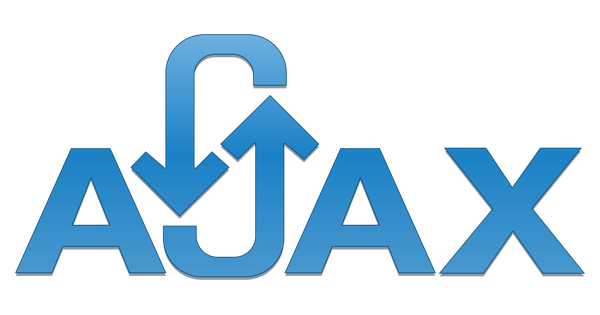
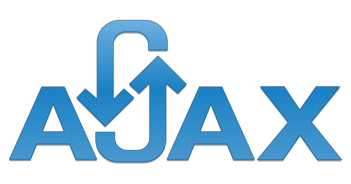

Ken CHENG
1071724 · 鄭淂元 ·
叡揚資訊實習生
我是第26屆元智資管校外實習生，我從今年一月開始於叡揚資訊實習一年，
目前的實習單位為ICBU，主要業務為知識管理系統。
我負責的是其中一個知識管理系統專案的維護，這個知識管理系統簡稱LKM，提供該客戶處理知識文件創造與分享相關作業。LKM包含了知識搜尋、知識交流園地、知識分享、我的知識、權限控管、外部資料匯入、統計分析、資料移轉、知識文件上傳、系統整合、連結線上表單簽核等主要功能項目。當中，專案維護的工作內容大致包含了功能測試、修正弱點問題與調整程式碼等方向。

在寒假時，我們進行了為期17天的新人訓練，第一個禮拜學習了MS SQL的進階資料庫語法；第二個禮拜學習了基礎前端運用、MVC的程式撰寫；第三個禮拜則是學習進階的前端功能，將前面寫過的MVC程式碼改用Ajax傳輸資料，並利用KendoUI完成前端的美化、以及拆解MVC專案的Layer分層實作。
身為一個資訊人員，必須非常清楚知道資訊相關的法律規範，才不會不小心觸法，公司在我們實習分發到各專案支援不久後，便開了這堂資安與智財課，在課堂中向我們詳述智慧財產權的法條規範，講師也非常有耐心的舉例給我們聽，讓我們更深刻的吸收這方面的知識。此外，資安的部分則是告訴我們一些相關的規範以及認證，例如：ISO 27001等，在這堂課的最後進行了認知測驗，只有達到分數門檻的人才算完成該課程。
在剛分發到開發知識管理系統的ICBU時，因為對於整個系統架構都非常不熟悉，所以在前幾天都在閱讀此專案的系統分析說明書等文件，架設好測試機與開發環境後，就開始進行第一次的弱點掃描修正了，此次的弱點掃描是針對「知識館」與「知識搜尋」兩大區進行修正。
有了第一次弱掃修正的經驗後，依據弱掃報告找出每個功能頁面可能面臨的問題的能力有明顯提升了，雖然因此專案的資料傳遞方式相較於之前所學過的都要來得複雜，所以有些bug還是找了蠻久的。第二次的弱點掃描主要是針對「知識達人」與「社群」進行修正，還有一些第一次弱掃修正時遺漏的部分頁面，此次的弱掃也多了第一次掃描報告中沒看到的危險類型，可見一個專案在程式撰寫時需要注意的面向是遠大於我們的想像的。
我在此工作中扮演了測試人員以及修改程式的角色，部門的前輩們給了我很大的空間訓練自己找出解決方式的能力，也不會給我太大的壓力在工作上，所以我在工作時就是依照使用者的習慣去操作，測試每個功能的結果是不是符合操作前所預期的，再對於測試結果決定需不需要調整。
除了修正弱掃報告找出的問題，在測試的過程中我有時候也會找到其他方面（非弱掃報告面）的bug，但因為我目前的工作內容不在該部分，所以我會先提出與前輩討論該程式可能出錯的原因，並先將之記錄下來以便日後修改。


 
